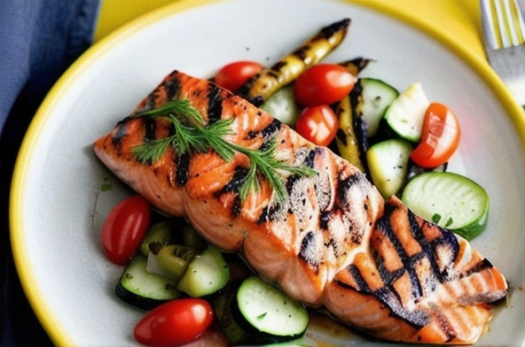

Grilled Salmon

Description
The simplest things of all are sometimes the tastier. This recipe of grilled salmon pairs perfectly with grilled vegetables, asparagus or quinoa. Quick, easy and delicious.
Ingredients
- 400 g of fresh salmon
- 2 tsp olive oil
- salt to taste
- black pepper to taste
- juice of half a lemon
- Season the salmon fillets with salt, pepper and half of the olive oil. Let it rest for 15 minutes.
- Add the rest of the olive oil to a skillet. Add the salmon when hot and let it cook for a couple of minutes on each size.
- When cooked to taste, turn off the heat and add the lemon juice.
- Serve with your favorite side dish.